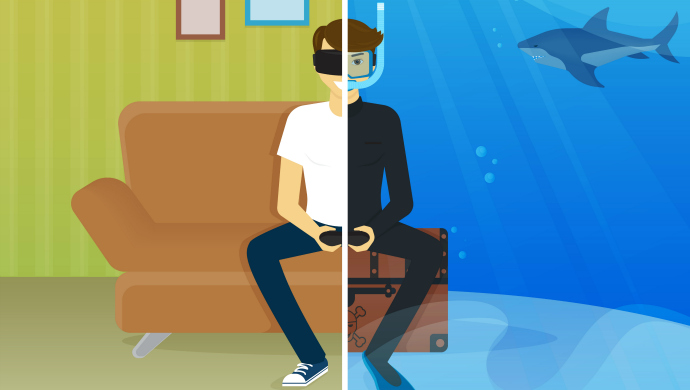

The experience?
A suitable explanation of experience can be: the observation of and/or interaction with objects, entities and /or the events in the environment of a person.
Different reasons cause different presence.
Two examples
Exclusive presence. The sense of "being somewhere" is tested in the virtual environment by Slater et al. They come up with the idea that
a related low level of presence in the real world is the basic requirement of the sense of presence in a VE and vice versa.
"In a certain moment," stated by Biocca,"it can be said that users can choose from only three places as where they are physically in: the physical environment, the virtual environment or the imaginal environment.
And the presence vibrates among these three choices." That means, no matter how long the relative time is consumed in virtual world, it will not influence the the level of presence that is felt during an interval.
Presence by involvement. Presence is related in part to the concept of attention by Witmer and Singer:"Presence may vary across a range of values that depends in part on the allocation of attentional resources."
· Involvement is known as a psychological state experienced as a result of concentrating somebody's attention on a clear set of stimuli or related matters.
· Immersion, a kind of psychological state as well, is formed by perceiving oneself that (s)he is involved in and interacting with a virtual environment.(This is not the same as the usual definition of immersion.)
Nature of Presence
A simple conclusion
In the last two pages some definitions and theories of the presence have been listed. It's worth noting that aithough they have different meanings, it does not means they will absolutely contradict each other.
To make the concept of presence accurate and obvious, researchers need better instruments and methods. But unfortunately, this is not a task as easy as it looks like. "Presence is a multi-dimensional parameter that is
arguably an umbrella tearm for many inter-related perceptual and psychological factors." warned by Kalawsky.Most theories attempt to explain presence in terms of several latent factors, one of those is attention.
At the same timw, most scholars make connections between presence and mental model of the virtual reality with the (virtual)body in it.

Actually, Prothero et al. claim that"'Presence'and ‘situation awareness’ are overlapping constructs."
An evidence that when it is difficult for someone to form a mental model of a real space, (s)he will reflect a lack of sense of presence as well. However, this evidence is supplied anecdotally.
Since presence is a mental state, what about..
Measuring the Presence
Of course the extent of presence can not be marked by numbers, however, there are still some methods to measure it.
The methods can be divided into two main kinds: subjective and objective measures, while the later one can further be divided into behavioral and physiological measures.
Questionnaire is the most popular method of subjective measures. All of the presence qustionnaires are belong to their own theoretical views on the concept of presence,
as mentioned in the last page, definitions of presence. At the same time, these methods are also helping refine their own theories. For instance, the questionnaire developed by Slater and colleagues
is based on several questions and these questions are all variations on three themes: "the subjective sense of 'being there'; the extent to which the VE becomes more 'real or present' than everyday reality; the
'locality' the extent to which the VE is thought of as a 'place' that was visited rather than just a set of images". For other theories, the methods and variations are different.
Objective measures: Behavioral. When people are experiencing a high level of presence, testing the reaction of them is an objective measure of presence. For example, when a virtual ball is thrown to a participate,
if the ball is real enough, (s)he will automatically try to catch the ball or just avoid it. This is a nature reaction of human. If the participate ignore the ball, then the presence is proved to be in a low level.
Objective measures: Physiological. This method try to measure the presence by measuring the physiological reaction of human bodies, like heart rate, sweatiness, temperature of skin....even though
the presence is thought to be a "mental model", it can influence the real bodies. One simple example is thriller. A suceessful thriller can always make the audience breathe hurriedly and sweat in their palms. These
reactions tell a high level of presence.